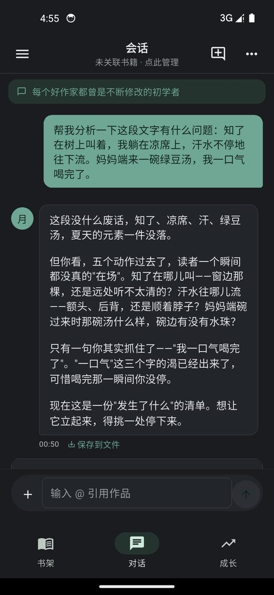
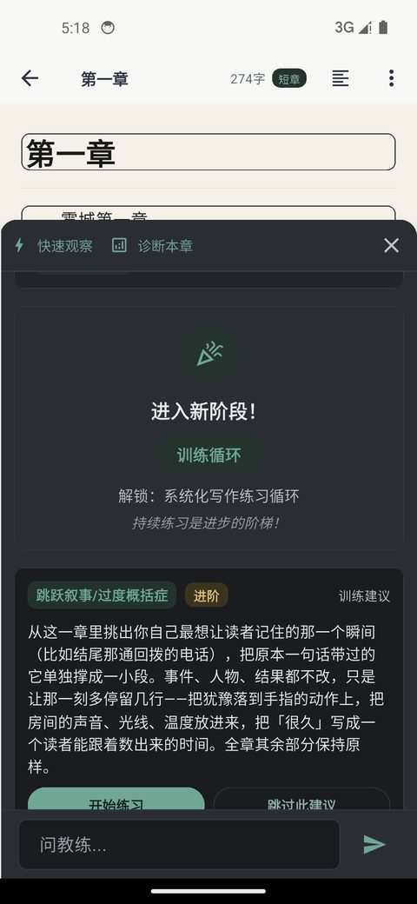
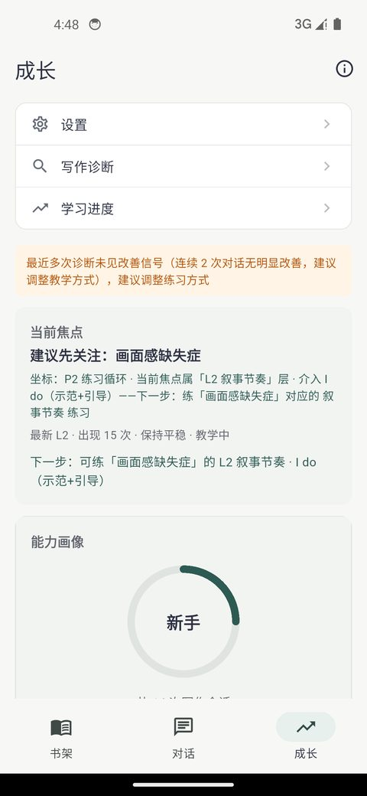

写作教练，不是写作助手
月笙不替你写句子，也不替你做决定。它读取你的一段文字，指出问题出在哪里、读者为什么会困惑，然后给你一次可以完成的练习——并记住你改进了多少。
Android 版自带密钥（BYOK）· 无需注册 · 源码公开可验证 · 在线诊断需用 WorkBuddy 账号登录一次
像一位资深编辑，而不是又一个 AI 助手
月笙把判断权留给你：诊断给事实与证据，训练给路径与对比，从不自动覆盖你的原文。
不替你写
给"事实 + 证据"，给"路径 + 对比"，永远保留你的判断与修改权。
直指根因
识别开篇拖沓、对话失焦这类具体症候，并定位到原文证据，不泛泛而谈。
进步可见
每一次诊断、练习、复盘都是成长记录里的节点，能回看好转或复发。
教练的说话方式，你说了算
三位预设教练各有脾气——温柔的默认档、有主张的月笙如歌、严格的 sensei。也可以自己写一个：名字、语气、角色口吻全自定义，切换后下次启动沿用。
读到哪句好，就「记一下」，它替你存进资料库
聊天里长按任意一条消息、或在正文里划一段文字，都能一键「记一下 / 存入设定库」：原文整段填进一张可编辑小卡，你再决定它归入人设、大纲还是世界观。确认后进资料库「待整理」，由你亲自确认或拒绝——教练只记录、不替你判断哪句值得留。
选文件时也能直接发图片和 docx：教练能看你贴的分镜图、参考页，不用再手敲一遍。
诊断更细：看得出"没信息"和"顺序反了"
新增「信息密度缺失」「描写顺序失序」两类症候，量维度分级标签 + 中文严重度提示让反馈更明确；建议卡按钮分级、输出互引，诊断、教学、复盘连成一条更顺的线。
一个片段 → 一个问题 → 一次练习 → 一次复测
整个应用围绕一条可验证的改进路径展开，而不是一个会聊天的框。
定位问题与证据
导入或粘贴一段文字，月笙识别症候，指出具体位置和读者困惑的原因。
一次只教一件事
不倾倒建议，只给一个可执行的专项任务，并解释背后的技法。
练完有反馈
完成练习后获得反馈与自评，通过与否有标准，不空喊"写得很好"。
同标准复测
回到同一片段对比修改前后，成长里记录每一次好转与复发。
教学由五阶段状态机驱动（初始 → 教学 → 训练 → 评估 → 复盘），每次对话都知道你学到哪一步。现在就试 →
在手机上看，它就是长这样
诊断给证据、训练给任务、成长给画像——三张图对应三条底线。

把片段交给月笙它指出具体问题："五个动作过去了，读者一个瞬间都没真的在场"。

一次只教一件事把最想让人记住的瞬间单独撑成一段，其余保持原样。

进步可见能力画像与当前焦点——练什么、为什么、到哪一步，一目了然。
你的稿件和密钥，都留在你的手机上
月笙是本地优先的写作教练——没有云端账号，稿件不落在我们的服务器上。
稿件不出手机
小说草稿、诊断结果、训练记录只写入本机数据库，不上传、不共享。
密钥自备（BYOK）
内置 DeepSeek、OpenAI、Kimi、通义千问、智谱 GLM、豆包六家预设，也支持自定义地址；密钥只存本机加密存储。
源码公开可验证
"不内置密钥、不经中转"不是一句承诺——源码开源，任何人都能查证应用究竟做了什么。
下载月笙，带上你的第一段文字
Android 安装包（APK）。明面上没有已知问题，可作为日常使用的稳定基线；产品仍在完善中，欢迎反馈。
下载 v0.6.1 APKAndroid 7.0 及以上 · 64 位（arm64）机型 · 安装包约 35.4 MB
问题与建议：在 GitHub 提 Issue（已安装、卡顿、识别不准、练习做不动，都欢迎写在这里）；先看看别人提过什么